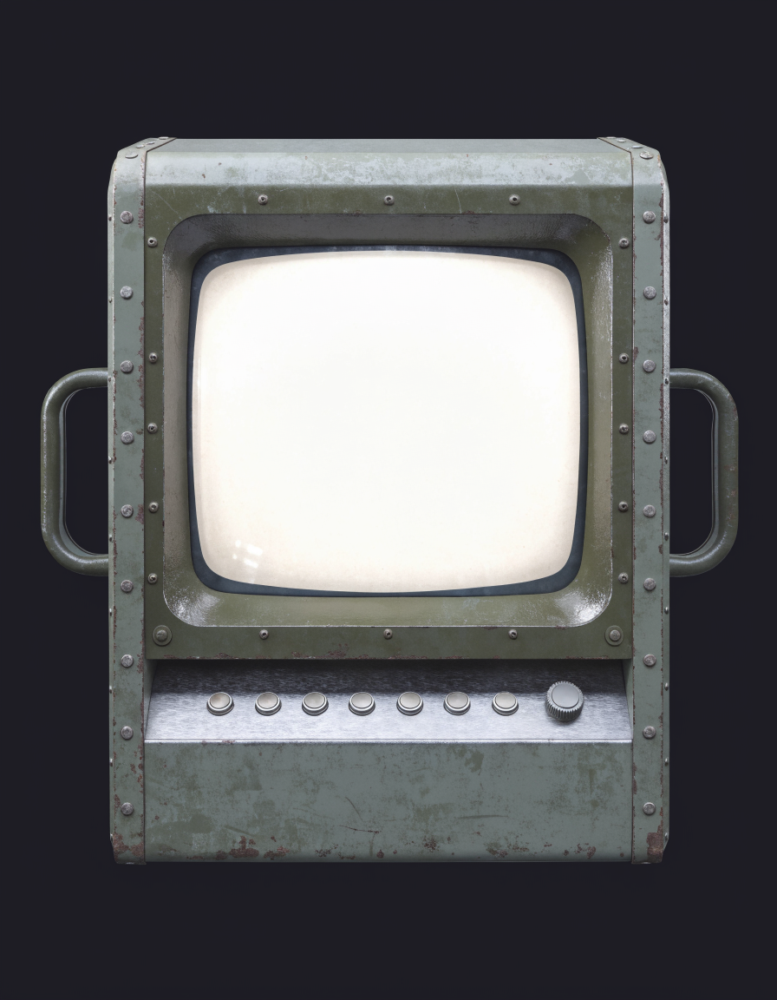
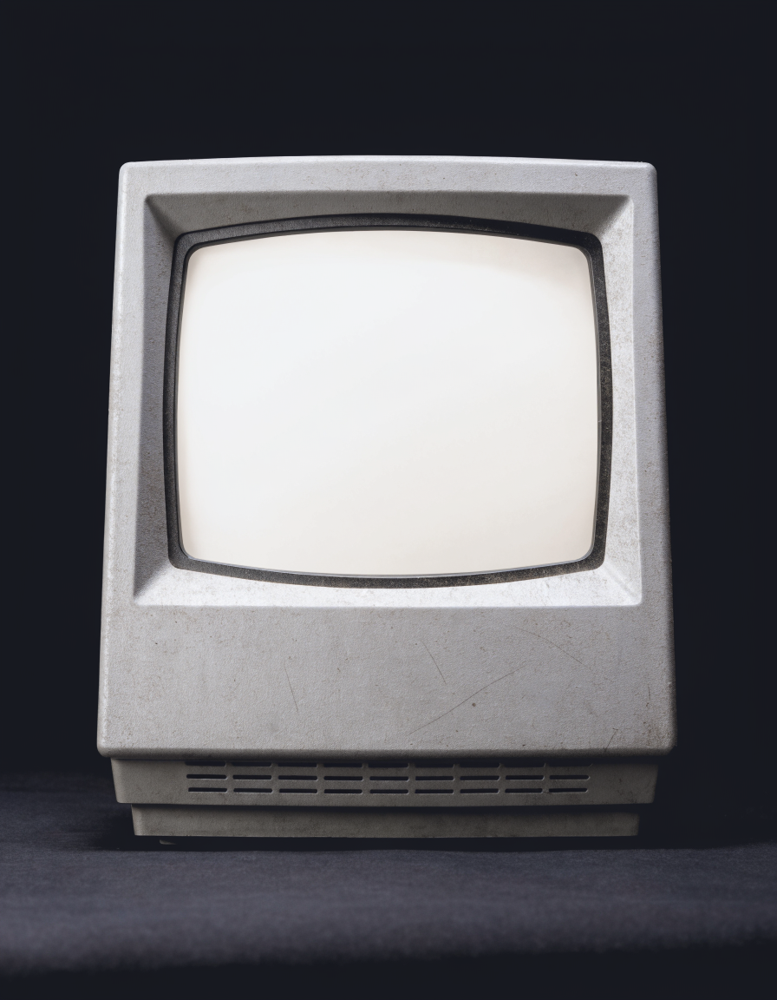

RETRO-RECHNER FÜR MISSION 5 · RUNDE 3
Größerer, etwas neuerer Bildschirm auf dem Fliegerschreibtisch. Frage und Eingabefeld liegen zur Probe auf der Mattscheibe.
DAS LUFTFAHRZEUG FLIEGT 120 KT. DAS ZIEL LIEGT 24 NM ENTFERNT. BERECHNE DIE FLUGZEIT IN MINUTEN.
12▌min
VARIANTE 7 · GROSSE RÖHRE UM 2000 (fast flache Scheibe, schmaler Rahmen)
DAS LUFTFAHRZEUG FLIEGT 120 KT. DAS ZIEL LIEGT 24 NM ENTFERNT. BERECHNE DIE FLUGZEIT IN MINUTEN.
12▌min
VARIANTE 8 · FLACHBILDSCHIRM ANFANG 2000ER (größte Schriftfläche, Headset mit Mikrofon)
RUNDE 2 (ZURÜCKGESTELLT)
VARIANTE 4 · WARMES BÜRO
VARIANTE 5 · NÜCHTERNES BÜRO
VARIANTE 6 · FLIEGERSCHREIBTISCH
RUNDE 1 (ZURÜCKGESTELLT)
VARIANTE 1 · MILITÄRKONSOLE

VARIANTE 2 · FELDRECHNER

VARIANTE 3 · 80ER-TERMINAL